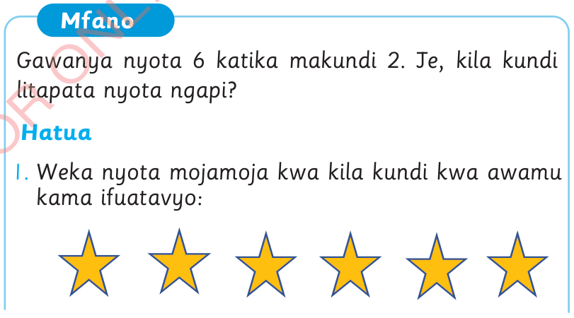

Sura ya Nane
Kugawanya
Tujifunze kugawanya kwa kutumia vitu
Kugawanya ni utaratibu wa kupanga vitu au namba katika mafungu yenye idadi sawa. Ni kinyume cha kuzidisha. Pia, kugawanya ni sawa na kutoa namba kwa kurudiarudia. Tendo la kugawanya huwakilishwa na alama ÷
Kwa mfano, 8 ÷ 4 = 2 husomwa, 8 gawanya kwa 4 ni sawasawa na 2.
Tunapogawanya vitu, ni vema kugawa kitu kimojakimoja kwa awamu.
Mfano
Gawanya nyota 6 katika makundi 2. Je, kila kundi litapata nyota ngapi?
Hatua
1. Weka nyota mojamoja kwa kila kundi kwa awamu kama ifuatavyo:

Kuhesabu Std 2 SEPT 2024.indd 91
07/11/2024 08:44